Core · Video walkthrough
Create training, assign members and verify quiz results
Create a focused software training, verify its audience and handout, complete a one-question quiz and distinguish viewed, completed, score and pass results.
Before you begin
- Use a fictional practice department and the existing permission to create/update training and review its report.
- Prepare an appropriate practice topic and a public software-only handout.
Chapters
- Name a focused training
- Write the actual training instructions
- Choose the score, due date and audience
- Add a question and mark its correct answer
- Verify creation and the initial progress report
- Read the saved learner view
- Start the quiz and select an answer
- Submit and check the catalog result
- Add another handout after quiz completion
- Read the result and plan follow-up
Watch the walkthrough
Step 1
Name a focused training
Training gives you a place to publish instructions, assign people, and review their recorded progress. We are on the New Training form in the fictional Chicago Fire department. Enter Academy, Shared contact verification exercise as the Training name. Use Description for a short explanation of what the training is about. Here it says that this is practice finding and checking fictional operational contacts. A clear title and description help a member recognize the assignment before opening the full lesson.

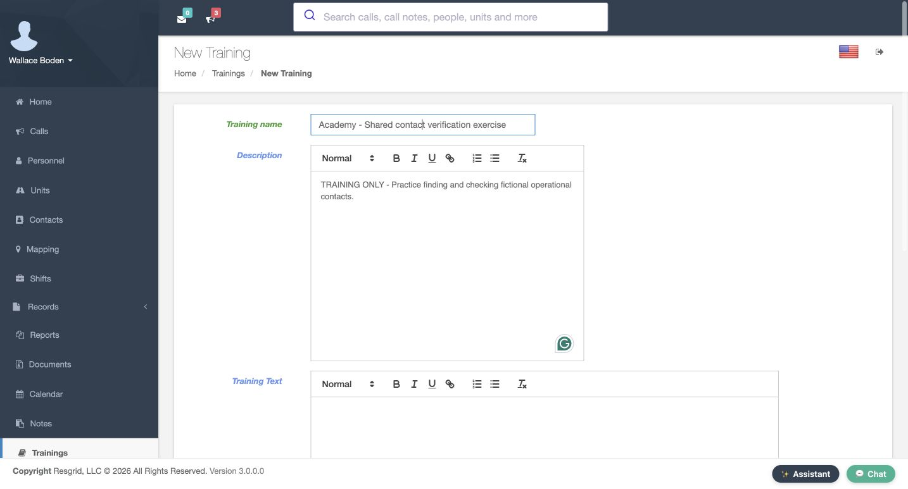
Practice
Prepare a uniquely named software practice training with a concise description.
Step 2
Write the actual training instructions
Training Text is the separate area for the instructions themselves. Our exercise asks the learner to open Contacts, find Academy Partner Directory, check the contact identity and current details, and reopen an entry after an edit. Read the complete paragraph before assigning it. It gives someone a concrete task and a way to verify the result. The wording also makes clear that the exercise does not authorize real outreach. Keep the catalog description short and put the actual learning steps in Training Text.
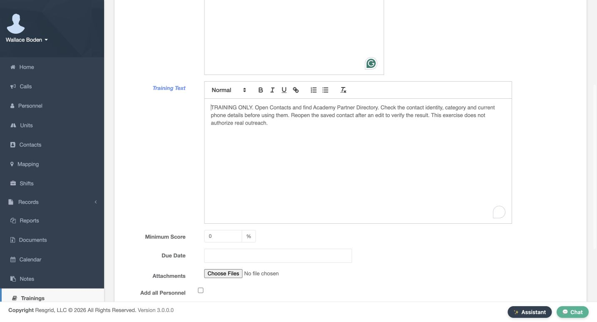
Practice
Write a short sequence with one clear verification step in Training Text.
Step 3
Choose the score, due date and audience
Set Minimum Score to one hundred percent for this one-question exercise and choose November fifteenth, twenty twenty-six as its Due Date. Review the audience before creating the training. Add all Personnel is checked here, which selects the whole fictional department. Groups To Add, Roles To Add, and Users To Add are the narrower alternatives when you choose a smaller audience. Do not assume a previously selected individual limits an assignment while Add all Personnel is checked. We will verify the resulting fourteen assignments after saving.
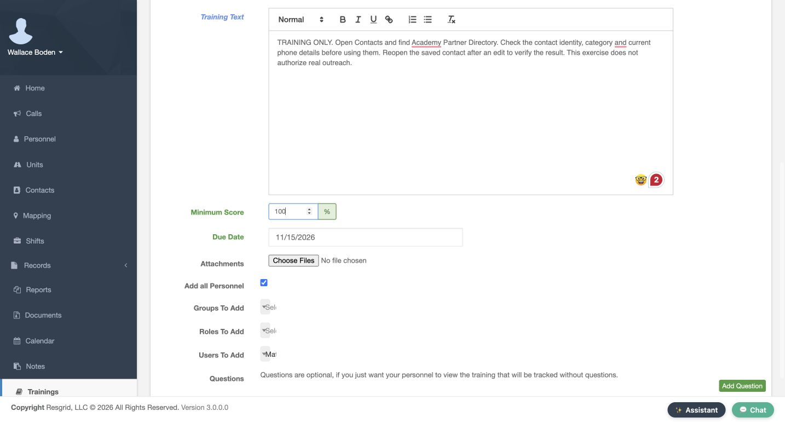
Practice
Choose the intended audience and review the bulk checkbox before submitting a practice assignment.
Step 4
Add a question and mark its correct answer
In Questions, use Add Question and enter: What should you do after updating a shared contact? Add two answers. The first says to reopen the saved contact and verify the updated details. The second says to assume the edit was saved without checking. Mark the first answer as correct using its radio control. Check the question, both answers, and the selected correct answer before choosing Add Training. One clear question is enough to demonstrate the difference between assigning content and checking the learner’s response.
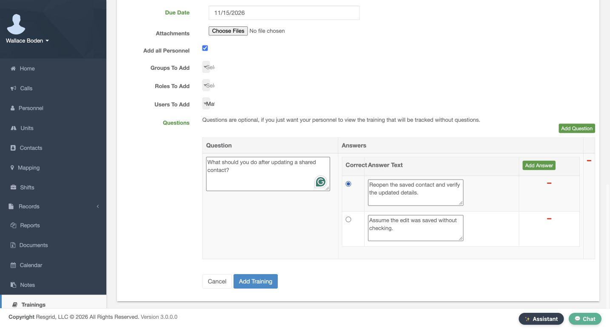
Practice
Add two distinct answers and verify which radio control marks the correct one.
Step 5
Verify creation and the initial progress report
The new training appears in the catalog with its description and due date, alongside the existing training entries. Open Report for this training before completing the exercise. The report separates Viewed, Completed, Score, and Result. Boden’s initial row says Not Viewed, Not Completed, No Score, and Pending. An assignment has been created, but that row does not yet record participation. Use these separate columns to decide whether someone has opened the training, submitted the quiz, or met the required score.
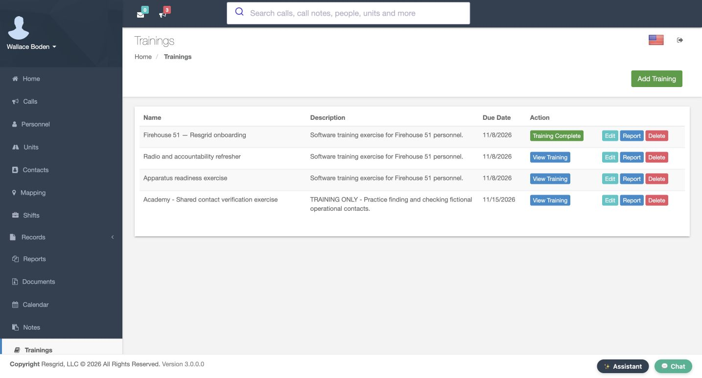
Practice
Find your new catalog row and read one assignee’s initial progress columns.
Step 6
Read the saved learner view
Open View Training for the saved exercise. Check the title, due date, description, and full training text from the learner’s side. This training has a quiz, so opening its page records that it was viewed; the learner still needs to answer and submit the quiz. Take Quiz is a separate action in the right-hand panel. Before taking it, review the instructions and any training files. The learner view is a useful check that the content people receive matches what you meant to assign.
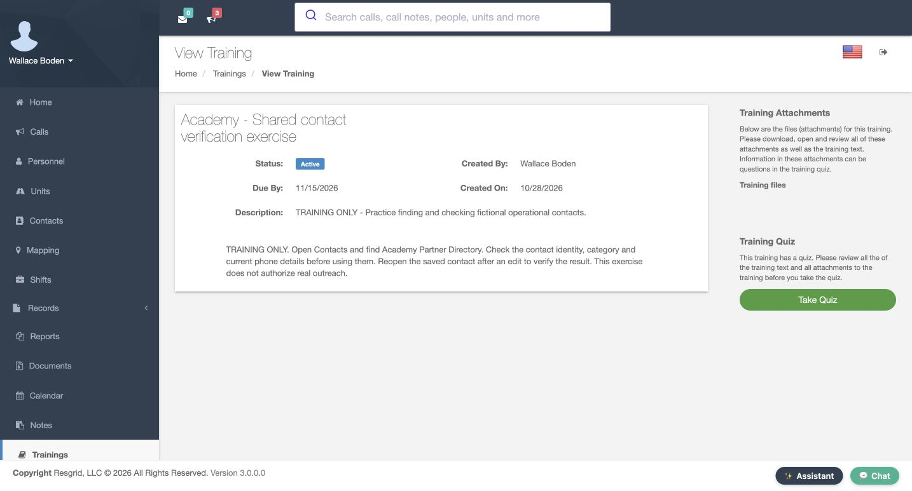
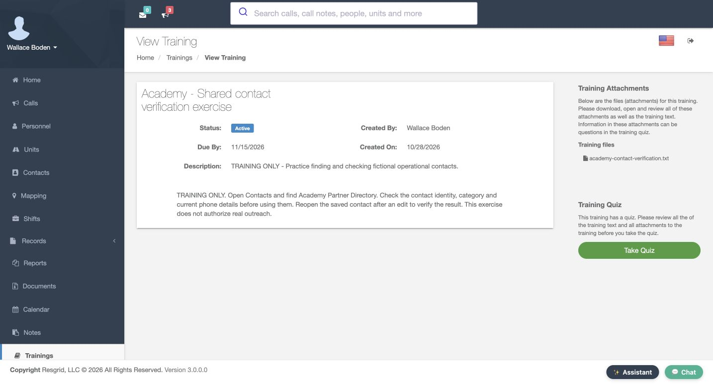
Practice
Open the saved learner view and verify its title, due date and complete instructions.
Step 7
Start the quiz and select an answer
Choose Take Quiz and read the welcome stage. Use Next to open Question One. The same question and two answers from the training editor now appear as learner choices. Select the answer that says to reopen the saved contact and verify the updated details. The filled radio control shows the current choice. Use Next to continue. Selecting an answer is still preparation; a quiz result is recorded after the learner submits it. You can use Previous to review the question before finishing.
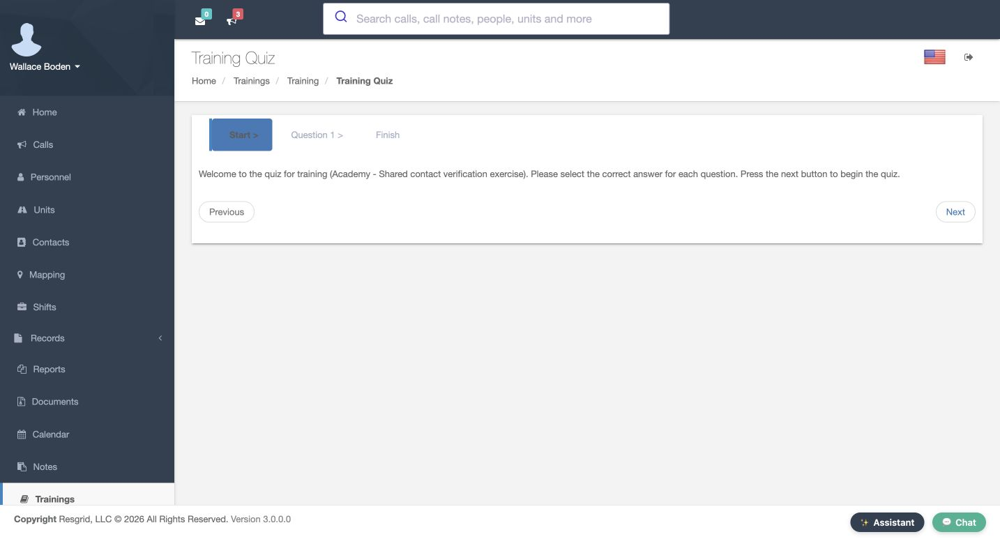
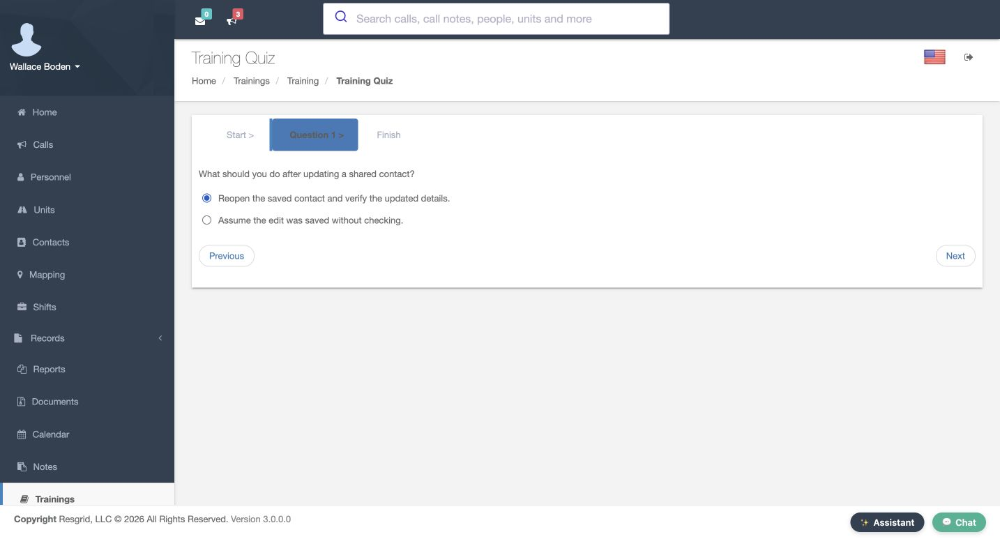
Practice
Read both quiz options and select the answer that matches the training instructions.
Step 8
Submit and check the catalog result
At the Finish stage, read the instruction to submit the quiz answers. The Finish control at the lower right performs that submission; the Finish label across the top identifies the stage. Submit once and check the returned catalog. For Boden, this exercise now shows Training Complete. That is the completion indicator for the current learner. Open Report to check the score and pass result as well, rather than treating a completed submission as proof of the required score.
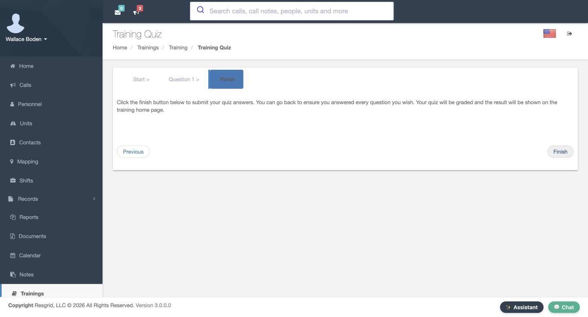
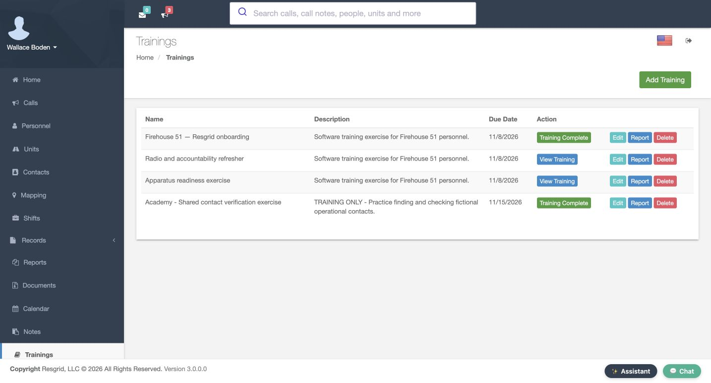
Practice
Submit the prepared quiz once and inspect the returned completion indicator before opening Report.
Step 9
Add another handout after quiz completion
An administrator can add another handout after a learner has completed the quiz. This training already lists the original contact-verification file and quick-check dot txt. On Edit, Existing Attachments identifies those saved files and Currently Assigned still shows fourteen users. Under Add Attachments, choose review dot txt. Check the selected filename and use Save Training at the bottom of this form. Reopen the learner view: Training files now lists all three handouts. This completed learner has no Take Quiz panel here. Verify the assignment count and existing result separately when maintaining a training.
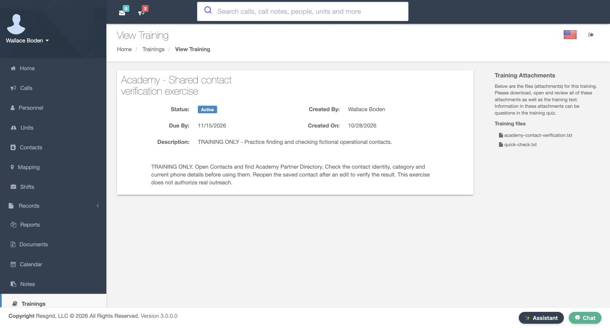
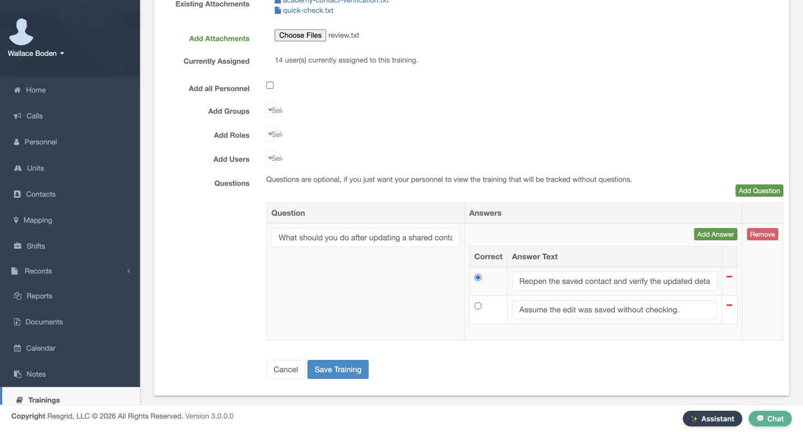
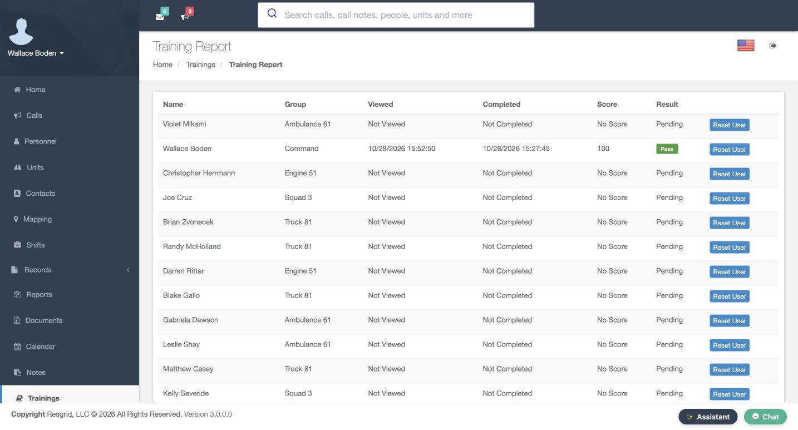
Practice
Add a software-only handout to your own practice training, then verify the saved file list and preserved assignment count.
Step 10
Read the result and plan follow-up
After that edit, Report still shows Boden’s completed quiz, score of one hundred, and Pass. Viewed records the most recent opening, so its displayed time can be later than the completion time. The other thirteen assignments remain Pending. Follow up with those learners separately. Chicago Fire can use this workflow for a department software refresher. Community care and mental health teams can assign operational process learning; search and rescue can review support procedures; security teams can teach site workflows; wildland crews can prepare seasonal information; and industrial response teams can review facility coordination steps. These recorded results describe this training and quiz; professional qualifications belong in their own reviewed process.
Practice
Compare the completed learner’s score and result with the remaining pending rows.
Examples for your department
- Fire / EMS
- Assign a fictional contact-verification software refresher and review per-person quiz results.
- Community response
- Assign operational process learning without patient details or a clinical authorization claim.
- Search and rescue
- Assign support-procedure learning and follow up on pending participants.
- Security
- Teach site software workflows with fictional site details.
- Wildland
- Prepare seasonal information and review each learner’s recorded result.
- Industrial
- Review facility coordination software steps; the quiz result does not certify equipment or response readiness.
Transcript
Download transcriptRead the complete transcript
Create training, assign members and verify quiz results Audience: department training administrators, assigned members Name a focused training Training gives you a place to publish instructions, assign people, and review their recorded progress. We are on the New Training form in the fictional Chicago Fire department. Enter Academy, Shared contact verification exercise as the Training name. Use Description for a short explanation of what the training is about. Here it says that this is practice finding and checking fictional operational contacts. A clear title and description help a member recognize the assignment before opening the full lesson. Practice: Prepare a uniquely named software practice training with a concise description. Write the actual training instructions Training Text is the separate area for the instructions themselves. Our exercise asks the learner to open Contacts, find Academy Partner Directory, check the contact identity and current details, and reopen an entry after an edit. Read the complete paragraph before assigning it. It gives someone a concrete task and a way to verify the result. The wording also makes clear that the exercise does not authorize real outreach. Keep the catalog description short and put the actual learning steps in Training Text. Practice: Write a short sequence with one clear verification step in Training Text. Choose the score, due date and audience Set Minimum Score to one hundred percent for this one-question exercise and choose November fifteenth, twenty twenty-six as its Due Date. Review the audience before creating the training. Add all Personnel is checked here, which selects the whole fictional department. Groups To Add, Roles To Add, and Users To Add are the narrower alternatives when you choose a smaller audience. Do not assume a previously selected individual limits an assignment while Add all Personnel is checked. We will verify the resulting fourteen assignments after saving. Practice: Choose the intended audience and review the bulk checkbox before submitting a practice assignment. Add a question and mark its correct answer In Questions, use Add Question and enter: What should you do after updating a shared contact? Add two answers. The first says to reopen the saved contact and verify the updated details. The second says to assume the edit was saved without checking. Mark the first answer as correct using its radio control. Check the question, both answers, and the selected correct answer before choosing Add Training. One clear question is enough to demonstrate the difference between assigning content and checking the learner’s response. Practice: Add two distinct answers and verify which radio control marks the correct one. Verify creation and the initial progress report The new training appears in the catalog with its description and due date, alongside the existing training entries. Open Report for this training before completing the exercise. The report separates Viewed, Completed, Score, and Result. Boden’s initial row says Not Viewed, Not Completed, No Score, and Pending. An assignment has been created, but that row does not yet record participation. Use these separate columns to decide whether someone has opened the training, submitted the quiz, or met the required score. Practice: Find your new catalog row and read one assignee’s initial progress columns. Read the saved learner view Open View Training for the saved exercise. Check the title, due date, description, and full training text from the learner’s side. This training has a quiz, so opening its page records that it was viewed; the learner still needs to answer and submit the quiz. Take Quiz is a separate action in the right-hand panel. Before taking it, review the instructions and any training files. The learner view is a useful check that the content people receive matches what you meant to assign. Practice: Open the saved learner view and verify its title, due date and complete instructions. Start the quiz and select an answer Choose Take Quiz and read the welcome stage. Use Next to open Question One. The same question and two answers from the training editor now appear as learner choices. Select the answer that says to reopen the saved contact and verify the updated details. The filled radio control shows the current choice. Use Next to continue. Selecting an answer is still preparation; a quiz result is recorded after the learner submits it. You can use Previous to review the question before finishing. Practice: Read both quiz options and select the answer that matches the training instructions. Submit and check the catalog result At the Finish stage, read the instruction to submit the quiz answers. The Finish control at the lower right performs that submission; the Finish label across the top identifies the stage. Submit once and check the returned catalog. For Boden, this exercise now shows Training Complete. That is the completion indicator for the current learner. Open Report to check the score and pass result as well, rather than treating a completed submission as proof of the required score. Practice: Submit the prepared quiz once and inspect the returned completion indicator before opening Report. Add another handout after quiz completion An administrator can add another handout after a learner has completed the quiz. This training already lists the original contact-verification file and quick-check dot txt. On Edit, Existing Attachments identifies those saved files and Currently Assigned still shows fourteen users. Under Add Attachments, choose review dot txt. Check the selected filename and use Save Training at the bottom of this form. Reopen the learner view: Training files now lists all three handouts. This completed learner has no Take Quiz panel here. Verify the assignment count and existing result separately when maintaining a training. Practice: Add a software-only handout to your own practice training, then verify the saved file list and preserved assignment count. Read the result and plan follow-up After that edit, Report still shows Boden’s completed quiz, score of one hundred, and Pass. Viewed records the most recent opening, so its displayed time can be later than the completion time. The other thirteen assignments remain Pending. Follow up with those learners separately. Chicago Fire can use this workflow for a department software refresher. Community care and mental health teams can assign operational process learning; search and rescue can review support procedures; security teams can teach site workflows; wildland crews can prepare seasonal information; and industrial response teams can review facility coordination steps. These recorded results describe this training and quiz; professional qualifications belong in their own reviewed process. Practice: Compare the completed learner’s score and result with the remaining pending rows. Examples for your department Fire / EMS: Assign a fictional contact-verification software refresher and review per-person quiz results. Community response: Assign operational process learning without patient details or a clinical authorization claim. Search and rescue: Assign support-procedure learning and follow up on pending participants. Security: Teach site software workflows with fictional site details. Wildland: Prepare seasonal information and review each learner’s recorded result. Industrial: Review facility coordination software steps; the quiz result does not certify equipment or response readiness.